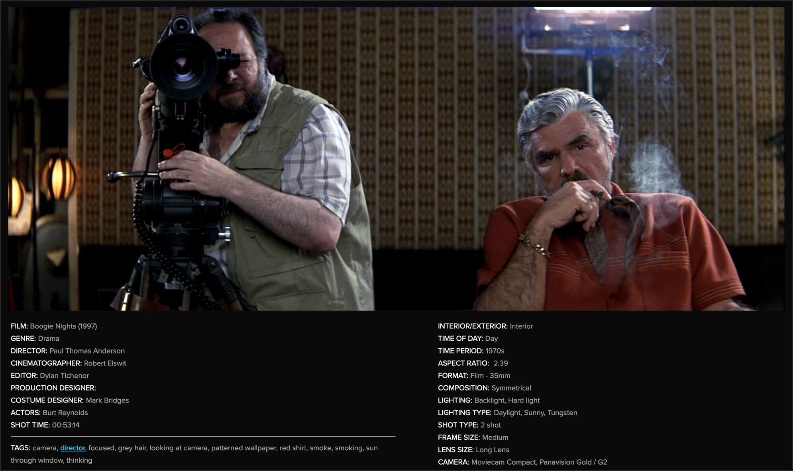

The library of film, one beautiful shot at a time.
ShotDeck is the largest collection of fully searchable high-definition movie images in the world.
What Is ShotDeck?
"ShotDeck has become a critical part of our creative process and is exponentially enhancing our ability to communicate our vision to our team. We're literally using it right now to prep our next movie!"
-
Easy Streaming Access
Interested in watching a film you discover on ShotDeck? Easy. Thanks to our integration with ReelGood, you can watch any film on the site with the click of a button through your favorite streaming service.
-
Discover new Films and Artists
ShotDeck’s unique design provides you with an organic discovery experience. Of course you’ll find the images you came for, but our huge database of keywords will take you on unexpected journeys finding related images, films, and filmmakers you didn’t know existed!
-
Build a Deck and Share It
You can build “decks” of your favorite images and share them instantly with your team. Get all your collaborators on the same page, let the images speak for themselves, and express your vision clearly with ShotDeck.
-
Metaculous Tagging
We’ve hand-tagged every image in over 30 categories with more than 50 keywords. Essential info like the crew, genre, cameras, lenses, framing, lighting, color, composition, locations, and even emotion on the actor’s face. So start searching for anything, you’ll find it here.
-
Built by Filmmakers
Our founder, Oscar-nominated cinematographer/director Lawrence Sher, created ShotDeck for one simple reason: He needed it and it didn’t exist. A quick, efficient way of finding reference images to communicate vision. So our team of industry veterans built this tool from scratch with the utility and design that filmmakers want. ShotDeck will deliver the images you need, save you time, and inspire you.
What People Are Saying
"ShotDeck has become a critical part of our creative process and is exponentially enhancing our ability to communicate our vision to our team. We're literally using it right now to prep our next movie!"
WAQAS QAZI
@THEQAZMAN / United States
FELICIA SMITH
@FLICK_CINE / Australia
ARMANDO FERREIRA
@MONDOBYTES / United States
ROD CAUHI
@RODCAUHI / Brazil
ShotDeck is now integral to my prep process with every director; it’s the initial tool I use to start the discussion around our visual vocabulary. ERIK MESSERSCHMIDT Oscar-winning Director of Photography - Mank, Mindhunter